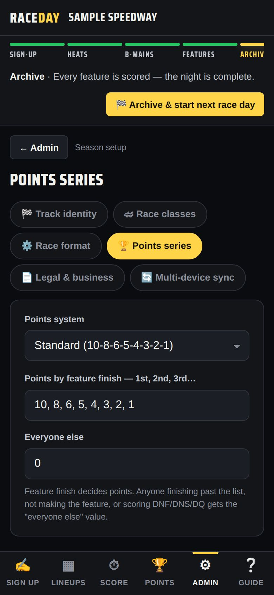
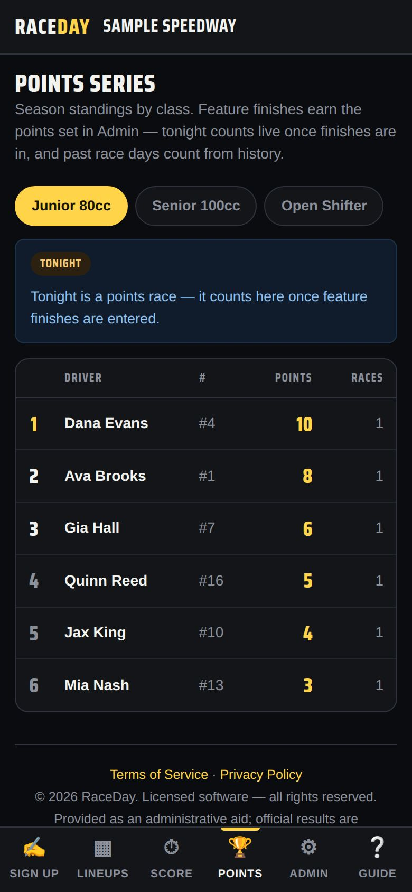
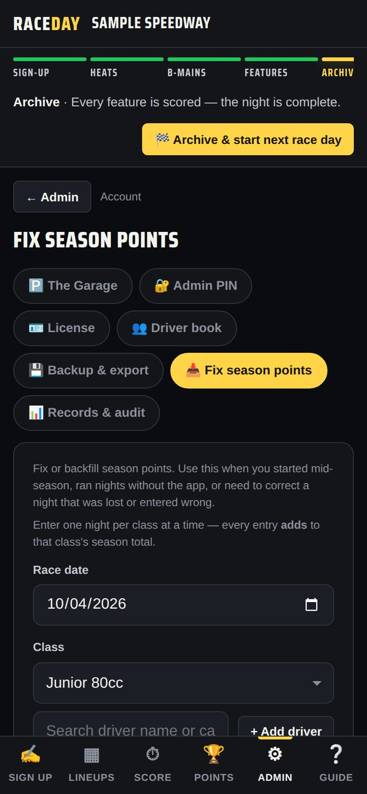

-
Choose a points system
In Admin → Points series, pick Standard (10-8-6-5-4-3-2-1), F1-style (top 10), Full-field linear (everyone scores), Podium only (5-3-1), or Custom — type your own below. Everyone else is what drivers outside the list get.

Points series -
Who scores what
The feature finish decides points. Drivers who finish past the list, don't make the feature, or DNF/DNS/DQ get the “everyone else” value. With full-field linear, the winner gets one point per car in the feature and last gets 1.
-
Tonight counts?
On the Score tab, leave Today counts toward the points series ticked for a points night (untick it for a practice or special event). It unlocks once every feature finish is in.
-
See the standings
The Points tab shows season standings by class, with tonight added live once features are scored.

Season standings -
Ties
Tied drivers are separated by most feature wins, then best feature finish, then alphabetically.
-
Drivers who don't run for points
Mark them No points in Admin → Driver book (or No pts in Today's entries). They still race, they just don't appear in the standings.
-
Fix or backfill a night
Started mid-season or missed a night? Admin → Fix season points: pick the Race date and Class, add drivers (+ Add driver or + Add whole class), type their points, and Save race night. Editing a saved night replaces it — it never double-counts.

Fix season points
Good to know
- Points only build up from archived nights — archive at the end of every race night (how).
- Changing the points system later doesn't rewrite nights that are already archived.
Next guides
Still stuck? The Field Manual walks through every screen, and the FAQ covers common questions. Or just ask.
Email a question →